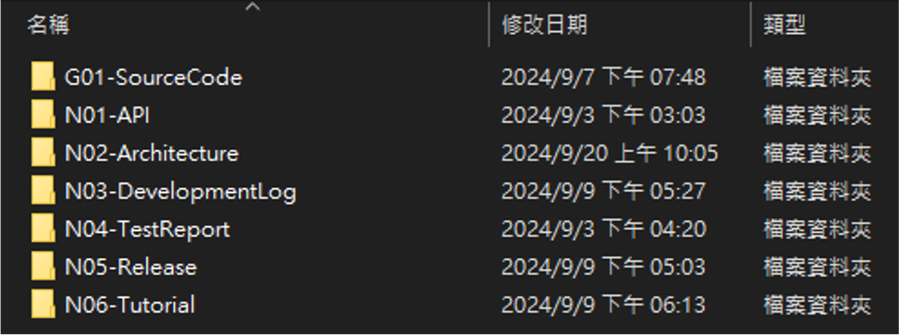

Project Directory Manage
前言
本文內容為資料夾管理概念的簡述，會教導你如何整理整個專案的資料，藉由標準化的整理模式，無論是自己再找資料，或是多人協作、交接等等，都可以使我們提升效率。
所有專案都必須依照本文所提出的管理方法進行資料夾分類，但依照專案規模，你可以自行再延伸出其他目錄來優化你的管理方式。
Hint
良好的資料整理習慣，本就是個軟體工程師因具備的技能。
建構專案目錄下的子資料夾
1. 利用 bat 檔或手動建立目錄下的子資料夾
建立一個 ProjectFolderInitial.bat (for Windows) 複製下列內容或 download bat file in gslab nas
md G01-SourceCode
md N01-API
md N02-Architecture
md N03-DevelopmentLog
md N04-TestReport
md N05-Release
md N06-Tutorial
type NUL > N01-API\README.md
type NUL > N02-Architecture\README.md
type NUL > N03-DevelopmentLog\README.md
type NUL > N04-TestReport\README.md
type NUL > N05-Release\README.md
type NUL > N06-Tutorial\README.md
建立完成後的專案目錄
2. 子目錄命名規則
專案資料夾的 G 或 N 開頭是有他的含意的。
G 開頭為 Git，需要使用 Git 控管。
N 開頭為 NAS 資料夾，需要將檔案上傳至 NAS。
每個目錄請給予編號與順序，用以排序與提升溝通的效率。
3. 子目錄說明
G01-SourceCode: 你的 Git 程式碼。
N01-API: API 相關文件。
N02-Architecture: 架構相關文件。
N03-DevelopmentLog: 開發相關文件，ex: 每週進度報告。
N04-TestReport: 測試相關文件。
N05-Release: 所發佈的版本檔案，ex: docker image。
N06-Tutorial: 教學相關文件。
4. 延伸
每個子目錄下你可以再建立資料夾去分類不同檔案，好比說 N02-Architecture，你可能包含了整個系統的架構圖、部份系統的架構圖、硬體架構文件、MSC/UML 圖、FSM…等，各式各樣不同的架構文件，你就可以在 N02 下再建立目錄去分類。
依照專案需求，自行新增 N07-…、N08-…。
記住，目錄的用意是要讓你有良好的檔案分類，良好的檔案分類可以讓你的開發與溝通更有效率、交接更順暢、維護更輕鬆。